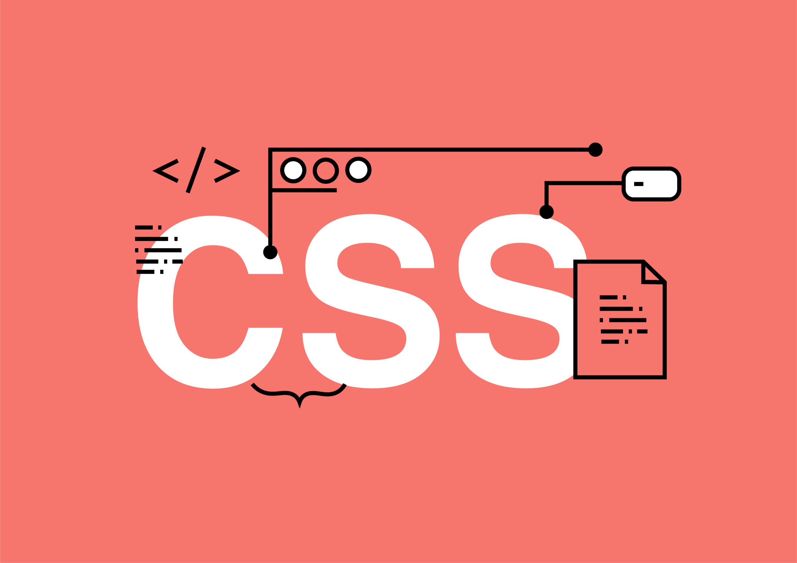
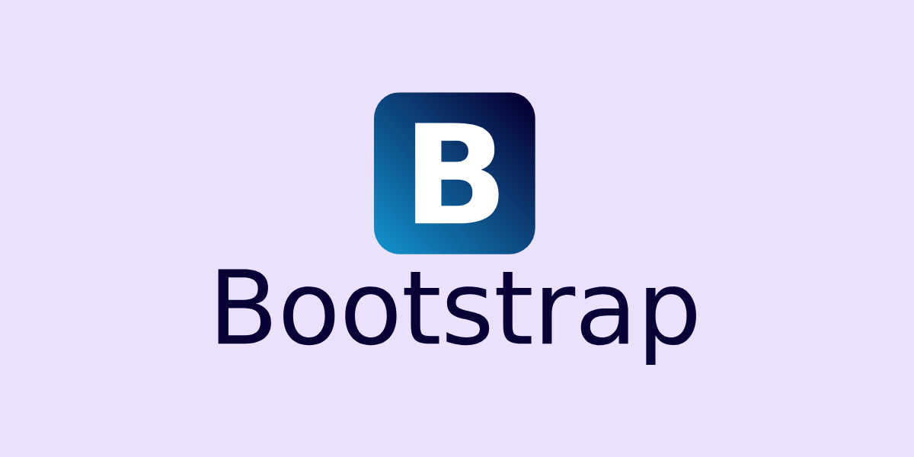
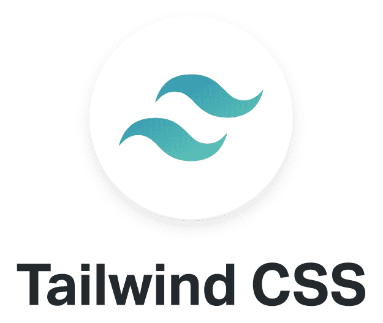

HTML (HyperText Markup Language) es el lenguaje estándar para crear páginas web. Es como el esqueleto de una página, proporcionando la estructura básica sobre la que se construyen todos los demás elementos.

CSS puedo hacer que una página web sea atractiva y fácil de usar, asegurándome de que se vea bien en diferentes dispositivos y tamaños de pantalla. Es una herramienta fundamental para cualquier desarrollador frontend.
JavaScript es un lenguaje de programación que se utiliza para añadir interactividad y dinamismo a las páginas web. Permite crear animaciones, validar formularios, y manipular el contenido de la página de manera dinámica en respuesta a las acciones del usuario.

React es una biblioteca de JavaScript para construir interfaces de usuario. Facilita la creación de componentes reutilizables y la gestión eficiente del estado de la aplicación, permitiendo desarrollar aplicaciones web interactivas y rápidas.

PHP es un lenguaje de scripting del lado del servidor diseñado para el desarrollo web. Se usa para crear páginas web dinámicas e interactivas, permitiendo la comunicación con bases de datos y la generación de contenido dinámico en tiempo real.

Bootstrap es un popular framework de desarrollo frontend de código abierto que facilita la creación de sitios web y aplicaciones web receptivas y móviles

Tailwind CSS es un framework de desarrollo frontend que se centra en proporcionar utilidades CSS de bajo nivel que pueden ser combinadas para construir interfaces web personalizadas de manera rápida y eficiente.